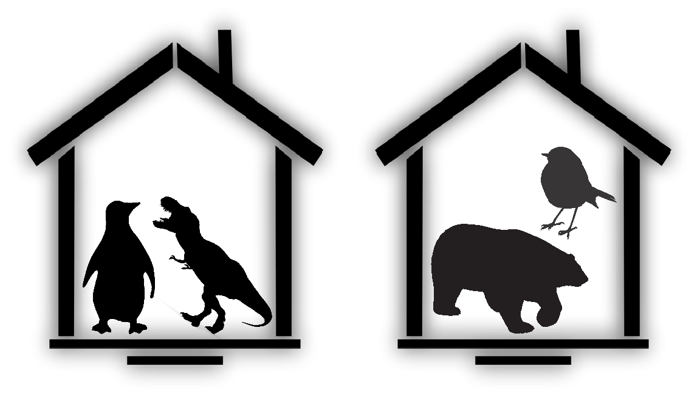

안녕하세요, 미관입니다. 코딩 공부를 위하여 간단한 웹미궁을 만들어보려 합니다. 데스크탑에서 플레이하시는걸 추천드립니다. 플레이 도중 불편한 점, 건의사항 등이 있다면 마음껏 말씀해주세요. 배경색이든, 이미지 위치든, 편의성이든, 뭐든 상관 없습니다. 이를 통해 사이트 내의 무언가들을 직접 고쳐보는게 저에게 큰 공부가 될 것이기 때문입니다. 그럼 첫번째 문제 시작하겠습니다.
